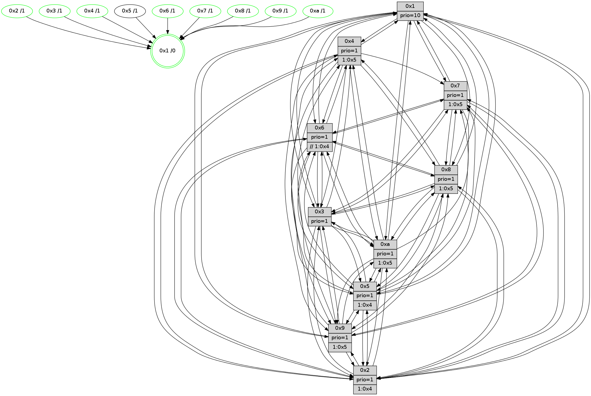

>> << IDX [start] -100 -25 -5 +0 +5 [1645.25791812]
 Previous packets
----------------------------------------------------------------------
1640.529132 beacon01(faad) #0 coord=01,02,03,04,05,06,07,0a,09,08 cycle=688.0ms assoc
-- color-indic=1 64 bd f6
1640.539115 beacon02(faad) #0 coord=01,02,03,04,05,06,07,0a,09,08 cycle=688.0ms assoc 64 2e c7
1640.549114 beacon03(faad) #0 coord=01,02,03,04,05,06,07,0a,09,08 cycle=688.0ms assoc 64 54 8a
1640.559115 beacon04(faad) #0 coord=01,02,03,04,05,06,07,0a,09,08 cycle=688.0ms assoc 64 23 60
1640.569115 beacon05(faad) #0 coord=01,02,03,04,05,06,07,0a,09,08 cycle=688.0ms assoc 64 59 2d
1640.579115 beacon06(faad) #0 coord=01,02,03,04,05,06,07,0a,09,08 cycle=688.0ms assoc 64 d7 fa
1640.589115 beacon07(faad) #0 coord=01,02,03,04,05,06,07,0a,09,08 cycle=688.0ms assoc 64 ad b7
1640.599118 beacon0a(faad) #0 coord=01,02,03,04,05,06,07,0a,09,08 cycle=688.0ms assoc 64 dc bc
1640.619120 beacon08(faad) #0 coord=01,02,03,04,05,06,07,0a,09,08 cycle=688.0ms assoc 64 28 26
1640.630359 [Hello(8): seq=989 sym=5,2,3,7,9,6,4,10,1 sysInfo=hasWarning stat=5:9,8,13,4/2:14,0,6,0/3:13,9,12,7/7:4,14,13,2/9:15,8,1,10/6:7,6,9,5/4:2,11,5,3/10:8,7,6,8/1:5,1,1,0]
1640.634272 [Hello(9): seq=989 sym=2,5,3,4,7,6,8,10,1 sysInfo=hasWarning stat=2:13,11,11,15/5:1,15,14,2/3:13,14,10,9/4:5,9,2,0/7:3,4,1,0/6:11,9,7,6/8:1,4,0,11/10:1,3,0,0/1:13,14,14,1]
1640.637427 [Color(9) seq=571 @0:0 prio=1 >1.@5,1.@a]
1640.640624 [Hello(10): seq=978 sym=6,2,3,8,7,5,9,4,1 sysInfo=hasWarning stat=6:8,11,7,10/2:14,15,11,4/3:7,3,4,2/8:0,14,13,8/7:13,3,6,2/5:3,2,12,5/9:9,1,5,1/4:0,1,0,0/1:3,8,12,1]
1640.643470 [Color(10) seq=622 @0:0 prio=1 >1.@5,1.@9]
1640.647035 [Color(1) seq=725 @0:0 prio=10]
1640.648873 [Hello(4): seq=1045 sym=5,8,6,2,3,9,7,1 asym=10 sysInfo=hasWarning stat=5:5,5,5,6/8:13,1,12,1/6:12,11,2,7/2:13,15,10,5/3:1,1,3,3/9:4,14,6,7/7:14,10,11,3/1:6,9,12,1/10:2,12,13,1]
1640.651693 [Hello(7): seq=1045 sym=2,3,5,6,8,4,9,1 sysInfo=hasWarning stat=2:2,8,7,8/3:6,15,14,9/5:5,0,3,7/6:1,1,6,2/8:10,4,12,3/4:7,15,8,2/9:2,4,1,1/1:4,1,11,0]
1640.654382 [Color(7) seq=552 @0:0 prio=1 >1.@5,1.@9,1.@a]
1640.659611 [Color(5) seq=552 @0:0 prio=1]
1640.664190 [Color(4) seq=562 @0:0 prio=1 >1.@2,1.@3,1.@5,1.@9]
----------------------------------------------------------------------
1641.317264 beacon01(faad) #0 coord=01,02,03,04,05,06,07,0a,09,08 cycle=688.0ms assoc
-- color-indic=1 64 89 ee
1641.327247 beacon02(faad) #0 coord=01,02,03,04,05,06,07,0a,09,08 cycle=688.0ms assoc 64 1a df
1641.337247 beacon03(faad) #0 coord=01,02,03,04,05,06,07,0a,09,08 cycle=688.0ms assoc 64 60 92
1641.347248 beacon04(faad) #0 coord=01,02,03,04,05,06,07,0a,09,08 cycle=688.0ms assoc 64 17 78
1641.357247 beacon05(faad) #0 coord=01,02,03,04,05,06,07,0a,09,08 cycle=688.0ms assoc 64 6d 35
1641.367247 beacon06(faad) #0 coord=01,02,03,04,05,06,07,0a,09,08 cycle=688.0ms assoc 64 e3 e2
1641.377246 beacon07(faad) #0 coord=01,02,03,04,05,06,07,0a,09,08 cycle=688.0ms assoc 64 99 af
1641.387252 beacon0a(faad) #0 coord=01,02,03,04,05,06,07,0a,09,08 cycle=688.0ms assoc 64 e8 a4
1641.407252 beacon08(faad) #0 coord=01,02,03,04,05,06,07,0a,09,08 cycle=688.0ms assoc 64 1c 3e
1641.418205 [Hello(1): seq=955 sym=4,2,9,5,10,3,8,6,7 sysInfo=coloring-mode-on,ColoringModeRequestCalled stat=4:9,0,3,5/2:7,2,0,9/9:5,4,1,7/5:13,4,5,14/10:13,12,9,11/3:4,13,12,0/8:9,8,0,9/6:15,9,3,8/7:0,1,8,5]
1641.423541 [Color(8) seq=633 @0:0 prio=1 >1.@5,1.@9,1.@a]
1641.425767 [Hello(5): seq=1046 sym=7,6,4,2,1,9,8,10,3 sysInfo=hasWarning stat=7:11,12,10,3/6:8,1,8,4/4:7,0,12,1/2:4,9,8,2/1:6,13,5,0/9:2,11,5,0/8:5,7,1,10/10:10,10,9,13/3:7,5,11,1]
1641.428669 [Hello(3): seq=1046 sym=1,7,6,2,4,8,9,10,5 sysInfo=hasWarning stat=1:4,13,5,0/7:9,1,14,1/6:7,9,1,0/2:12,14,4,0/4:0,12,11,1/8:3,6,1,10/9:15,1,5,5/10:9,7,10,9/5:12,6,14,5]
1641.431487 [STC(3)->1 #0.301 new-neigh,tree-change,inconsistent-stability,stable,to-color d=1]
1641.434731 [Color(3) seq=675 @0:0 prio=1]
1641.436009 [Hello(2): seq=1042 sym=4,5,7,6,3,9,8,10,1 sysInfo=hasWarning stat=4:8,11,4,1/5:6,5,4,6/7:0,5,14,5/6:3,4,0,0/3:1,3,0,0/9:2,8,2,14/8:5,1,15,1/10:1,11,1,0/1:8,5,8,0]
1641.441080 [Color(2) seq=606 @0:0 prio=1 >1.@3,1.@4,1.@5,1.@9]
1641.442904 [Hello(6): seq=1046 sym=3,2,5,4,7,9,8,10,1 sysInfo=hasWarning stat=3:11,3,6,2/2:9,0,10,3/5:4,5,9,9/4:14,4,3,12/7:12,6,9,2/9:5,8,9,15/8:14,5,12,12/10:15,9,2,2/1:0,9,13,1]
1641.447643 [Color(6) seq=678 @0:0 prio=1 >>1.@3,1.@4,1.@5]
----------------------------------------------------------------------
1642.105396 beacon01(faad) #0 coord=01,02,03,04,05,06,07,0a,09,08 cycle=688.0ms assoc
-- color-indic=1 64 35 eb
1642.115377 beacon02(faad) #0 coord=01,02,03,04,05,06,07,0a,09,08 cycle=688.0ms assoc 64 a6 da
1642.125379 beacon03(faad) #0 coord=01,02,03,04,05,06,07,0a,09,08 cycle=688.0ms assoc 64 dc 97
1642.135379 beacon04(faad) #0 coord=01,02,03,04,05,06,07,0a,09,08 cycle=688.0ms assoc 64 ab 7d
1642.145379 beacon05(faad) #0 coord=01,02,03,04,05,06,07,0a,09,08 cycle=688.0ms assoc 64 d1 30
1642.155379 beacon06(faad) #0 coord=01,02,03,04,05,06,07,0a,09,08 cycle=688.0ms assoc 64 5f e7
1642.165379 beacon07(faad) #0 coord=01,02,03,04,05,06,07,0a,09,08 cycle=688.0ms assoc 64 25 aa
1642.175383 beacon0a(faad) #0 coord=01,02,03,04,05,06,07,0a,09,08 cycle=688.0ms assoc 64 54 a1
1642.185385 beacon09(faad) #0 coord=01,02,03,04,05,06,07,0a,09,08 cycle=688.0ms assoc 64 da 76
1642.195383 beacon08(faad) #0 coord=01,02,03,04,05,06,07,0a,09,08 cycle=688.0ms assoc 64 a0 3b
1642.206925 [Hello(8): seq=990 sym=5,2,3,7,9,6,4,10,1 sysInfo=hasWarning stat=5:10,9,13,4/2:15,1,6,0/3:14,10,13,7/7:5,15,13,2/9:0,9,1,10/6:8,7,9,5/4:3,12,5,3/10:9,8,6,8/1:6,2,1,0]
1642.209951 [Color(1) seq=726 @0:0 prio=10]
1642.211725 [Hello(4): seq=1046 sym=5,8,6,2,3,9,7,1 asym=10 sysInfo=hasWarning stat=5:6,5,5,6/8:14,2,12,1/6:13,12,2,7/2:14,0,10,5/3:2,2,4,3/9:4,14,6,7/7:14,10,11,3/1:7,9,12,1/10:2,12,13,1]
1642.214941 [Color(4) seq=563 @0:0 prio=1 >1.@3,1.@5,1.@9,1.@a]
1642.220318 [Hello(7): seq=1046 sym=2,3,5,6,8,4,9,1 sysInfo=hasWarning stat=2:3,9,7,8/3:7,0,15,9/5:6,1,3,7/6:2,2,6,2/8:11,5,12,3/4:7,0,8,2/9:2,4,1,1/1:5,1,11,0]
1642.222708 [Color(5) seq=553 @0:0 prio=1 >1.@3,1.@4,1.@6,1.@7]
1642.225891 [Hello(9): seq=990 sym=2,5,3,4,7,6,8,10,1 sysInfo=hasWarning stat=2:14,12,11,15/5:2,0,14,2/3:14,15,11,9/4:6,10,2,0/7:4,5,1,0/6:12,10,7,6/8:2,5,0,11/10:2,4,0,0/1:14,15,14,1]
1642.230958 [Color(9) seq=572 @0:0 prio=1 >1.@5,1.@a]
1642.232613 [Hello(10): seq=979 sym=6,2,3,8,7,5,9,4,1 sysInfo=hasWarning stat=6:9,12,7,10/2:15,0,11,4/3:8,4,5,2/8:1,15,13,8/7:14,4,6,2/5:4,3,12,5/9:9,1,5,1/4:1,2,0,0/1:4,9,12,1]
1642.236714 [Color(10) seq=623 @0:0 prio=1 >1.@5,1.@9]
1642.244653 [Color(7) seq=553 @0:0 prio=1 >1.@5,1.@9,1.@a]
----------------------------------------------------------------------
1642.893526 beacon01(faad) #0 coord=01,02,03,04,05,06,07,0a,09,08 cycle=688.0ms assoc
-- color-indic=1 64 f1 e5
1642.903508 beacon02(faad) #0 coord=01,02,03,04,05,06,07,0a,09,08 cycle=688.0ms assoc 64 62 d4
1642.913509 beacon03(faad) #0 coord=01,02,03,04,05,06,07,0a,09,08 cycle=688.0ms assoc 64 18 99
1642.923508 beacon04(faad) #0 coord=01,02,03,04,05,06,07,0a,09,08 cycle=688.0ms assoc 64 6f 73
1642.933509 beacon05(faad) #0 coord=01,02,03,04,05,06,07,0a,09,08 cycle=688.0ms assoc 64 15 3e
1642.943509 beacon06(faad) #0 coord=01,02,03,04,05,06,07,0a,09,08 cycle=688.0ms assoc 64 9b e9
1642.953511 beacon07(faad) #0 coord=01,02,03,04,05,06,07,0a,09,08 cycle=688.0ms assoc 64 e1 a4
1642.963514 beacon0a(faad) #0 coord=01,02,03,04,05,06,07,0a,09,08 cycle=688.0ms assoc 64 90 af
1642.973514 beacon09(faad) #0 coord=01,02,03,04,05,06,07,0a,09,08 cycle=688.0ms assoc 64 1e 78
1642.983514 beacon08(faad) #0 coord=01,02,03,04,05,06,07,0a,09,08 cycle=688.0ms assoc 64 64 35
1642.995735 [Hello(1): seq=956 sym=4,2,9,5,10,3,8,6,7 sysInfo=coloring-mode-on,ColoringModeRequestCalled stat=4:10,1,3,5/2:8,3,0,9/9:6,5,1,7/5:14,5,5,14/10:14,13,9,11/3:5,14,13,0/8:10,9,0,9/6:0,10,3,8/7:1,2,8,5]
1642.998678 [Hello(2): seq=1043 sym=4,5,7,6,3,9,8,10,1 sysInfo=hasWarning stat=4:9,12,4,1/5:6,6,4,6/7:1,6,14,5/6:4,5,0,0/3:1,3,0,0/9:3,9,2,14/8:6,1,15,1/10:2,12,1,0/1:9,6,8,0]
1643.001734 [Hello(5): seq=1047 sym=7,6,4,2,1,9,8,10,3 sysInfo=hasWarning stat=7:11,13,10,3/6:9,2,8,4/4:7,0,12,1/2:5,10,8,2/1:6,13,5,0/9:3,12,5,0/8:6,7,1,10/10:11,11,9,13/3:8,6,12,1]
1643.004184 [Color(2) seq=607 @0:0 prio=1 >1.@3,1.@4,1.@5,1.@9]
1643.006725 [Color(8) seq=634 @0:0 prio=1 >1.@5,1.@9,1.@a]
1643.009497 [Hello(6): seq=1047 sym=3,2,5,4,7,9,8,10,1 sysInfo=hasWarning stat=3:11,3,6,2/2:9,0,10,3/5:4,6,9,9/4:15,5,3,12/7:13,7,9,2/9:6,9,9,15/8:15,5,12,12/10:0,10,2,2/1:1,10,13,1]
1643.012938 [Color(6) seq=679 @0:0 prio=1 >>1.@4,1.@5,1.@6]
1643.015651 [Hello(3): seq=1047 sym=1,7,6,2,4,8,9,10,5 sysInfo=hasWarning stat=1:5,14,5,0/7:10,2,14,1/6:8,10,1,0/2:13,15,4,0/4:1,13,11,1/8:4,6,1,10/9:0,2,5,5/10:10,8,10,9/5:12,7,14,5]
1643.019756 [Color(3) seq=676 @0:0 prio=1]
----------------------------------------------------------------------
1643.681658 beacon01(faad) #0 coord=01,02,03,04,05,06,07,0a,09,08 cycle=688.0ms assoc
-- color-indic=1 64 4d e0
1643.691640 beacon02(faad) #0 coord=01,02,03,04,05,06,07,0a,09,08 cycle=688.0ms assoc 64 de d1
1643.701639 beacon03(faad) #0 coord=01,02,03,04,05,06,07,0a,09,08 cycle=688.0ms assoc 64 a4 9c
1643.711643 beacon04(faad) #0 coord=01,02,03,04,05,06,07,0a,09,08 cycle=688.0ms assoc 64 d3 76
1643.721640 beacon05(faad) #0 coord=01,02,03,04,05,06,07,0a,09,08 cycle=688.0ms assoc 64 a9 3b
1643.731641 beacon06(faad) #0 coord=01,02,03,04,05,06,07,0a,09,08 cycle=688.0ms assoc 64 27 ec
1643.741641 beacon07(faad) #0 coord=01,02,03,04,05,06,07,0a,09,08 cycle=688.0ms assoc 64 5d a1
1643.751646 beacon0a(faad) #0 coord=01,02,03,04,05,06,07,0a,09,08 cycle=688.0ms assoc 64 2c aa
1643.761645 beacon09(faad) #0 coord=01,02,03,04,05,06,07,0a,09,08 cycle=688.0ms assoc 64 a2 7d
1643.771646 beacon08(faad) #0 coord=01,02,03,04,05,06,07,0a,09,08 cycle=688.0ms assoc 64 d8 30
1643.785103 [Hello(8): seq=991 sym=5,2,3,7,9,6,4,10,1 sysInfo=hasWarning stat=5:10,10,13,4/2:15,1,6,0/3:15,11,13,7/7:6,0,13,2/9:1,10,1,10/6:9,8,9,5/4:4,13,5,3/10:10,9,6,8/1:7,3,1,0]
1643.788147 [Hello(10): seq=980 sym=6,2,3,8,7,5,9,4,1 sysInfo=hasWarning stat=6:10,13,7,10/2:0,1,11,4/3:9,5,5,2/8:2,0,13,8/7:14,5,6,2/5:5,3,12,5/9:9,1,5,1/4:1,2,0,0/1:5,10,12,1]
1643.791161 [Hello(4): seq=1047 sym=5,8,6,2,3,9,7,10,1 sysInfo=hasWarning stat=5:7,6,5,6/8:15,3,12,1/6:14,13,2,7/2:15,1,10,5/3:3,3,4,3/9:5,15,6,7/7:15,11,11,3/10:3,13,13,1/1:8,10,12,1]
1643.794923 [Color(4) seq=564 @0:0 prio=1 >1.@5,1.@9,1.@a]
1643.796526 [Color(10) seq=624 @0:0 prio=1 >1.@5,1.@9]
1643.799230 [Hello(9): seq=991 sym=2,5,3,4,7,6,8,10,1 sysInfo=hasWarning stat=2:15,13,11,15/5:3,0,14,2/3:15,0,11,9/4:6,10,2,0/7:4,6,1,0/6:13,11,7,6/8:3,6,0,11/10:3,5,0,0/1:15,0,14,1]
1643.802685 [Color(9) seq=573 @0:0 prio=1 >1.@5,1.@a]
1643.804195 [Color(5) seq=554 @0:0 prio=1 >1.@4,1.@6,1.@7,1.@8]
1643.807253 [Hello(7): seq=1047 sym=2,3,5,6,8,9,1 sysInfo=hasWarning stat=2:4,10,7,8/3:8,1,15,9/5:7,1,3,7/6:3,3,6,2/8:12,6,12,3/9:2,4,1,1/1:6,2,11,0]
1643.810789 [Color(7) seq=554 @0:0 prio=1 >1.@5,1.@9,1.@a]
----------------------------------------------------------------------
1644.469788 beacon01(faad) #0 coord=01,02,03,04,05,06,07,0a,09,08 cycle=688.0ms assoc
-- color-indic=1 64 99 d5
1644.479771 beacon02(faad) #0 coord=01,02,03,04,05,06,07,0a,09,08 cycle=688.0ms assoc 64 0a e4
1644.489769 beacon03(faad) #0 coord=01,02,03,04,05,06,07,0a,09,08 cycle=688.0ms assoc 64 70 a9
1644.499771 beacon04(faad) #0 coord=01,02,03,04,05,06,07,0a,09,08 cycle=688.0ms assoc 64 07 43
1644.509772 beacon05(faad) #0 coord=01,02,03,04,05,06,07,0a,09,08 cycle=688.0ms assoc 64 7d 0e
1644.519771 beacon06(faad) #0 coord=01,02,03,04,05,06,07,0a,09,08 cycle=688.0ms assoc 64 f3 d9
1644.529772 beacon07(faad) #0 coord=01,02,03,04,05,06,07,0a,09,08 cycle=688.0ms assoc 64 89 94
1644.539777 beacon0a(faad) #0 coord=01,02,03,04,05,06,07,0a,09,08 cycle=688.0ms assoc 64 f8 9f
1644.559775 beacon08(faad) #0 coord=01,02,03,04,05,06,07,0a,09,08 cycle=688.0ms assoc 64 0c 05
1644.571630 [Hello(5): seq=1048 sym=7,6,4,2,1,9,8,10,3 mpr= sysInfo=hasWarning stat=7:12,14,10,3/6:10,3,8,4/4:7,0,12,1/2:5,11,8,2/1:6,13,5,0/9:3,12,5,0/8:7,8,1,10/10:11,11,9,13/3:9,7,12,1]
1644.575046 [Hello(2): seq=1044 sym=4,5,7,6,3,9,8,10,1 sysInfo=hasWarning stat=4:10,13,4,1/5:6,7,4,6/7:2,7,14,5/6:5,6,0,0/3:2,4,0,0/9:4,10,2,14/8:7,2,15,1/10:3,13,1,0/1:10,6,8,0]
1644.577494 [Hello(1): seq=957 sym=4,2,9,5,10,3,8,6,7 sysInfo=coloring-mode-on,ColoringModeRequestCalled stat=4:10,1,3,5/2:9,4,0,9/9:7,6,1,7/5:15,6,5,14/10:14,14,9,11/3:6,15,13,0/8:11,10,0,9/6:1,11,3,8/7:2,3,8,5]
1644.580089 [Color(8) seq=635 @0:0 prio=1 >1.@5,1.@9,1.@a]
1644.581616 [Hello(3): seq=1048 sym=1,7,6,2,4,8,9,10,5 sysInfo=hasWarning stat=1:6,15,5,0/7:11,3,14,1/6:8,10,1,0/2:13,15,4,0/4:2,13,11,1/8:5,6,1,10/9:1,3,5,5/10:11,9,10,9/5:12,8,14,5]
1644.584607 [STC(1) #0.302 new-neigh,tree-change,inconsistent-stability,stable,to-color d=0]
1644.586112 [Color(2) seq=608 @0:0 prio=1 >1.@4,1.@5,1.@9,1.@a]
1644.588025 [Hello(6): seq=1048 sym=3,2,5,4,7,9,8,10,1 sysInfo=hasWarning stat=3:12,4,6,2/2:9,0,10,3/5:4,7,9,9/4:0,5,3,12/7:14,8,9,2/9:7,10,9,15/8:0,5,12,12/10:1,11,2,2/1:2,10,13,1]
1644.592123 [Color(6) seq=680 @0:0 prio=1 >>1.@4,1.@5,1.@6]
1644.594945 [Color(3) seq=677 @0:0 prio=1]